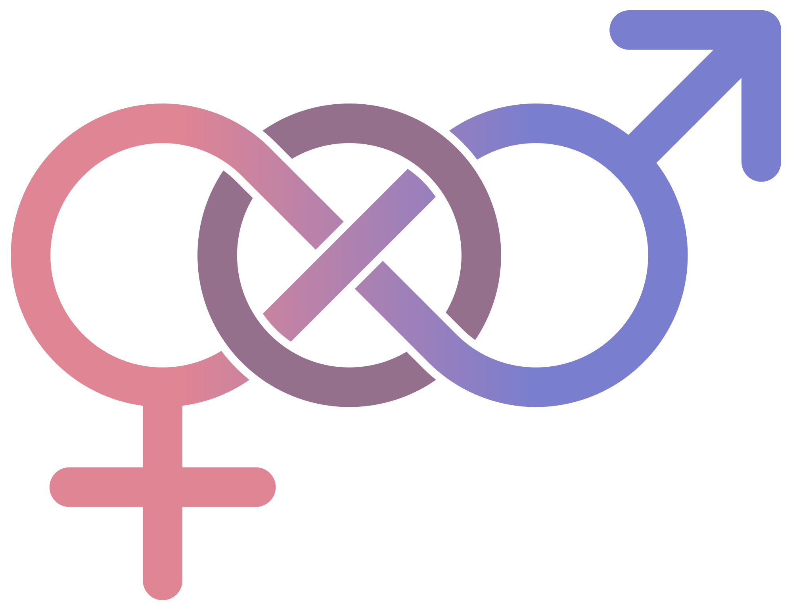
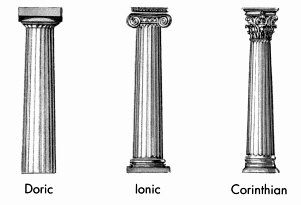

Basic Sentences
- 1.1 Neptunus est deus.
- 1.2 Urbs antiqua est. (Aeneid Book I)
- 1.3 Neptunus et Minerva sunt dei.
- 1.4 Bellum est longum.
The Nominative Case and Linking Sentences
For those students who have never heard of this term before, you’re in luck! This will help you with your studies of the English Language as well since this term is used there, too. The nominative case is the case or form that is used to show that a word is the subject of a sentence. There are other uses too, but those will be described in the next section. If you are unfamiliar with how to tell if a word is a subject, here is a description:
Subject : the subject of a sentence is the noun or pronoun who does the verb, the person or thing that the sentence is mainly about. My friends and I went out to a party. It was too crowded and loud. The neighbors kept complaining about the noise. The police were called. The party broke up. We came home.
In most English sentences you’ll notice that the subject comes first. That often happens in Latin, too, but not necessarily . In Latin, the subject is always in the nominative case.
Because the subject of a Latin sentence does not necessarily come first in the sentence, there must be another way for you to know if the word is the subject and in the nominative case. In fact, there is. Every noun in Latin fits into a category which we will call a declension. These declensions provide Latin students with a convenient chart to know how a noun in the nominative case should be formed, because it is the SPELLING of the words in Latin that determine their case. For now, in order to keep your life manageable, I will only be introducing the first two declensions in this chapter. This isn’t really quite true, because the 2nd of these declensions has a brother!
Linking sentences are sentences that contain the words ‘is’ or ‘are”. In Latin these are the words ‘est’ and ‘sunt’. There are actually other words that can form linking sentences but we will learn about those later. These linking verbs (est/sunt) connect two words in the nominative case. In English the subject is first and the word after the verb is called a predicate nominative if it is a noun or a predicate adjective if it is an adjective. For a few chapters I will color-code these cases so you can get used to seeing them in context. I will use RED to denote the Nominative Case.
Let’s try a few English sentences to illustrate the point.
- The dog is fat.
- The students are tired.
Now let’s look at Basic Sentence 1.1.
Neptunus est deus.
As you can see the structure is almost the same in both languages. The tricky part about Latin is that the word order is not always as regular as it is in English. What would happen if we mixed up the word order of the English sentences? “The dog fat is.” doesn’t work. In Latin, however, “Neptunus deus est” means the same thing as “Neptunus est deus” or any other combination for that matter! This will become easier to understand towards the end of the chapter.
Gender

Every noun in Latin has a gender. There are a total of 3 genders in Latin: masculine, feminine, and neuter. You might ask yourself, why does a noun have to have a gender?! There is really no good answer to this burning question. Some of this has bled over into our language. For instance, we usually refer to ships with the pronoun ‘she’. Sometimes there is a good reason for a noun to have the gender that it does. Deus (god) in Latin is masculine, while puella (girl) is feminine. There are however far more examples of nouns which have genders that we would not expect. Bellum (war) is neuter, while tempestas (storm) is feminine. Fortunately for us the declensions that I mentioned earlier will give us a handy guide. If you’d like a different explanation about Latin gender, you can check out this YouTube video here.
1st and 2nd Declension
So, before I dump a giant chart on you, I’ll need to explain a few things. The first is that there are a total of 5 heavily used cases in Latin, including the nominative case mentioned previously. In the chart below, you will notice that I am leaving spaces for these cases so that when they are revealed in a later chapter you will know the context of that new case. The second thing to mention is that, as I hinted earlier, we are learning the first two declensions, but the second declension has a brother….and it’s neuter. The 1st declension will hold all feminine nouns that we will learn (for now) and the 2nd declension will hold all the masculine and neuter nouns that we will learn (again...for now). In the boxes below you will see an ending. These little groups of letters show us how the ending of a noun will need to change in order to make it nominative singular or nominative plural. All nouns belong to a declension and whatever declension they belong to will never change.

| Feminine | Masculine | Neuter | |
|---|---|---|---|
| Singular | 1st Declension | 2nd Declension | 2nd Declension (n) |
| Nominative | -a | -us/r | -um |
| Genitive | |||
| Dative | |||
| Accusative | |||
| Ablative | |||
| Plural | |||
| Nominative | -ae | -i | -a |
| Genitive | |||
| Dative | |||
| Accusative | |||
| Ablative |
N.B. the 2nd declension nominative can end in a “us” or an “r”.
So, taking a look at this chart you can probably see that the word “bellum” from our Basic Sentences fits into the 2nd declension neuter column because it ends in “um”. If you follow that column downward you can see that if we want to make the word “bellum” plural we will need to change the ending to the plural form “bella”. If we wanted to change Basic Sentence 1.4 entirely plural if would look like this:
Bella sunt longa.
Notice that the verb has to change to plural (est---> sunt) and the predicate adjective/nominative has to change as well!
Vocabulary
| Word | Definition |
|---|---|
| est/sunt | is/are |
| Animus, i m | mind |
| Deus, i m | god |
| Terra, ae f | land |
| Vita, ae f | life |
| Causa, ae f | reason/cause |
| Vir, i m | man |
| Bellum, i n | war |
| Caelum, i n | Sky/heaven |
| Puer, i m | boy |
| Populus, i m | people |
| Puella, ae f | girl |
| Fatum, i n | fate |
| Equus, i m | horse |
| Dominus, i m | master |